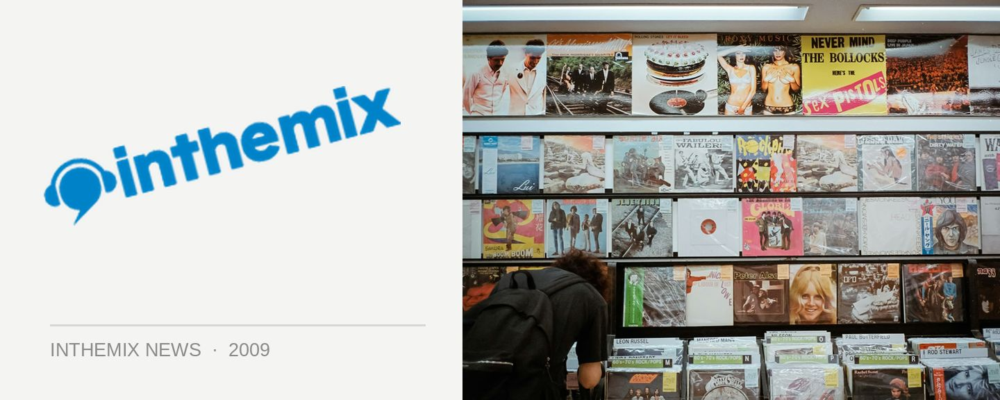

Guns N Bombs talk LA electro mayhem
It’s all going off like crazy over in Los Angeles, apparently. “The first six months of me living there, I’d go out to parties and people were listening to Michael Jackson, really terrible ironic garbage. And then something happened,” Guns N Bombs member Johnny ‘Love’ Dal Santo told ITM this week, in anticipation of the group’s June tour that will see them perform at We Love Sounds in Sydney, Winter Sound System in Melbourne and more. “I have no idea what it was, but all of a sudden everyone decided, ‘hey, we’re gonna play dance music too.’”
It was the 2007 Coachella festival in the nearby Colorado Desert, when Justice played for the first time, that really marked the turning point for when the noisy, feedback-drenched sound blew up really big in the city. “It’s at the point now where electro has become completely mainstream in Los Angeles. It’s ridiculous. My roommate does a Tuesday night party in Hollywood, it’s all-ages and there’s like a thousand kids. It’s unbelievable. One thousand kids on a Tuesday night, it’s completely unheard of.”
Guns N Bombs were famously signed to ultra-hip French label Kitsuné in late 2006, an impressive achievement for any act so early in their career, and it was this international hookup that positioned the pair as undisputed kings of the Los Angeles electro scene – and helped forge a watertight Paris/LA alliance. “It’s kind of like when in 1989, Tresor released the compilation Berlin & Detroit: A Techno Alliance. When two cities really appreciate each other, and all these producers in both cities are making similar music and having the same ideas, it’s kind of natural for them to gravitate towards each other, and form this ‘sister city’ kind of friendship.”
Guns N Bombs tour Australia in June. Stay tuned for ITM’s full-length interview!
Jun 6 – We Love Sounds, Sydney
Jun 7 – Warehouse Winter Music Festival, Canberra
Jun 7 – Winter Sound System, Melbourne
Jun 8 – We Love Sounds, Adelaide